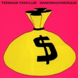
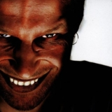
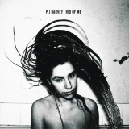

Top 100 Albums of 1990-1999 (Part Four: 80-61)
By No Ripcord Staff
 77. Mansun
77. Mansun
 61. Manic Street Preachers
61. Manic Street Preachers
We've gone through the first twenty so here are the next batch. From gazillion-sellers to cult debuts, the list voyages across the environs of popular music, taking in myriad styles and genres along the way. Be honest; this list's shaping up pretty good, right?
[Bubbling Under] | [Writers' Picks] | [100-81] | [80-61] | [60-41] | [40-21] | [20-16] | [15-11] | [10-6] | [5-1]
80. Red Hot Chili Peppers
“Blood Sugar Sex Magik”
(Warner Bros. – 1991)
When the Chilis rocked up with Blood Sugar Sex Magik in 1991, it was off the back of four previous studio albums that had received relatively limited success. The punky-funk style and brash, swaggering attitude of Anthony Kiedis’ vocals were as prominent as before, but the recent establishment of John Frusciante and Chad Smith within the band was telling. Smith brought further tightness to the rhythm section, Frusciante’s flawless falsettos and an arrogant, upfront melodic core to the relentless funk-punk that was – and still is - their trademark. The structure of the album is unorthodox to say the least. They couldn’t squeeze another track onto the CD at 74 minutes in length, and the majority of the themes explored screamed downright sexual acuteness, completely bypassing any innuendo stage. Blood Sugar… houses track after memorable track, and an audacity of assurance that announced the band as the mainstay they ultimately became. Carl Purvis
Playlist: Under The Bridge
79. Alanis Morissette
“Jagged Little Pill”
(Maverick / Reprise – 1995)
I don’t know of an album that’s encapsulated angst and rage more melodically than Alanis Morissette’s Jagged Little Pill. Angry, bitter lyrics are sung with a raw emotion and passion that’s impossible to ignore. And when combined with singalong melodies such as those found on singles Ironic, You Oughta Know, Hand In My Pocket and You Learn, Jagged Little Pill was almost destined to become an international success story. Some 33 million sales and five Grammy Award wins later (not to mention the record being the best-selling album of the 1990s in the US), it’s clear just how much of a success story it was. Craig Stevens
Playlist: You Oughta Know
78. Teenage Fanclub
“Bandwagonesque”
(Creation – 1991)
Here’s a challenge: can you accurately describe Teenage Fanclub’s signature sound without mentioning harmonies, power-pop, the West Coast, or comparing them Big Star? Good luck with that one. Prior to the arrival of 1991’s Bandwagonesque, however, none of these descriptors would have been particularly relevant. 1990’s A Catholic Education was loud and dirty, very much in keeping with the burgeoning grunge scene, offering only a few hints of the remarkable progression the Fanclub would demonstrate over the next 12 months. Bandwagonesque was a true game-changer, setting the blueprint for everything they’ve recorded since; that it also features a handful of the finest songs in the band’s catalogue is a welcome bonus. Metal Baby and What You Do To Me are particular standouts, both guaranteed to ensnare the uninitiated by the end of their first choruses. I can also report that for a 1991 album, the music has aged exceptionally well. That cover art on the other hand... David Coleman
Playlist: What You Do To Me
77. Mansun“Attack Of The Grey Lantern”
(Parlophone – 1997)
Looking back it might be easy to mock Mansun as a second-wave/second-rate Britpop act who undid themselves with a crippling sense of grandeur, but at the time of the release of this, their debut album, they seemed like a genuinely exciting prospect, and at least the ridiculousness of their swagger was knowing. That Attack Of The Grey Lantern still stands up today is in part a result of some big, boisterously anthemic songwriting, and a hell of a lot of humour. Attempt to picture Alan Bennett forming a glam rock band and allowing his small-town Northern British, gossipy creations to be a bit more openly daring with their kinks, and you’ve just about got it. Mark Davison
Playlist: Stripper Vicar
76. Aphex Twin
“Richard D. James Album”
(Warp / Sire / Elektra – 1996)
Consider the strange, mangled grin and distorted effects of Richard D. James’ face on his (literally) self-titled album a warning of what’s to come. Spastic, electrifying, and completely chaotic, Richard D. James Album is the culmination of everything the producer had built towards after years of playing with ambient, drum n’ bass, and other experimental electronic sounds, resulting in his greatest musical seizure. Though incredibly busy at times, the electro-fried tracks that make up Richard D. James Album prove to be incredibly diverse and unique within themselves over time, while tracks like Peek 824545201 and Yellow Calx show that Aphex Twin’s work can be as haunting and beautiful as it is totally insane. Peter Quinton
Playlist: Yellow Calx
75. Wilco
“Summerteeth”
(Reprise – 1999)
Wilco had dabbled with the idea of ambition before, something they’d put well into practice with Being There, but here they were just beginning to stamp their footprints into a long and illustrious career. Summerteeth may always be considered as their breakthrough, the one where they decided to break away from their country-rock roots and completely change their outlook. Main songwriter Jeff Tweedy also approached headier, more mature themes, all the while implementing the timeless practice of disguising hard truths with warm, peppy sentiments. Yet it was crafted in a way that seemed natural to them, continuing to err on the side of conservatism while focusing on rustic arrangements that morphed into classic-sounding pop songs with luscious melodies. So while it may not be consistent with the tenets of a full-fledged album, it achieves something more valuable: a collection of hook-filled songs that always sound better than you remembered. Juan Edgardo Rodriguez
Playlist: A Shot In The Arm
74. Dr. Dre
“The Chronic”
(Death Row / Interscope / Priority – 1992)
People talk a lot about guilty pleasures. Surely The Chronic is the ultimate example? Almost everything about this album is fundamentally evil: the misogyny, the homophobia, the exploitation of black stereotypes. But as soon as you hear a track as smooth as Let Me Ride, your guilty mind shuts down and the funk loving part of your brain kicks in. Seeing the potential in mixing the battle rhymes of Criminal Minded-era Boogie Down Productions with the sounds of George Clinton, Dre was on to a winner. Add to that heady concoction the ridiculous “fo’shizzle” wordplay of Snoop Dogg and you’ve got something irresistible. Like fast food, you’ll feel that guilt and emptiness afterwards, but it’s so good at the time. James McKenna
Playlist: Let Me Ride
73. Saint Etienne
“Foxbase Alpha”
(Heavenly / Warner Bros. – 1991)
At the height of the trip-hop boom, Saint Etienne released Foxbase Alpha – a pop record with its fair share of stoned, hip-hop beats. However, their influences stretched far behind those of Tricky et al, with disco, Chicago house, girl-group pop and 1970s public information films all getting a look-in. Thus you get impeccable three minute pop songs alongside a dance cover of Neil Young’s Only Love Can Break Your Heart, intercut with an ambient track repeatedly looping lines from an educational LP about decimalisation. Unsurprisingly, Foxbase Alpha has a scrapbook feel, full of samples and short snatches of melody, but it also contains a curiosity and willingness to experiment that’s all too rare in popular music. Joe Rivers
Playlist: Nothing Can Stop Us
72. Mos Def
“Black On Both Sides”
(Rawkus / Priority – 1999)
Black On Both Sides is Mos Def’s debut album as a solo artist and it’s probably the last record in the nineties with a solid body of intelligent lyrics mixed with a style as smooth as a walk along the Caribbean sea. Mos Def, along with partner-in-lyrical-crime Talib Kweli, formed Black Star during the nineties; but it is not until Black On Both Sides that Mos Def lets all his lyrical gifts drop. He was the only rapper at that moment talking about globalisation in a corporate-ruled world or ambient pollution through his rhymes. Black On Both Sides manages to cover socio-political issues while still having an amazing time in the dance floor. This is Mos Def’s highest point. Carlos Dávalos
Playlist: Ms. Fat Booty
71. Ride
“Nowhere”
(Creation – 1990)
Ride are often forgotten as being the first band on Creation to break both the singles and album charts. Handsome, young and armed with a love of melody and noise, a series of EPs led to anticipation of Nowhere, which did not disappoint. Though neither of the singer-guitarists, Mark Gardner and Andy Bell, were going to win prizes for singing, they turned this into an advantage, surrounding their vocals with waves of guitar racket that sound best when turned up very, very loud. Not that they couldn't do melody - Vapour Trail, armed with accompanying cello, had a fragility many of their contemporariness couldn't manage. Ride would go onto more mainstream tones, and enjoy bigger success. But forget that one of them is now Liam Gallagher's sideman: Nowhere was the moment where he and his bandmates were searching for something other than the traditional. DC Harrison
Playlist: Dreams Burn Down
70. Bob Dylan
“Time Out Of Mind”
(Columbia – 1997)
Unlike Love & Theft and Modern Times that came after, this record is not without flaws. Yet it contained much that reckoned with the great art that Dylan has made in the past and so was vastly superior to most of the records released in 1997. From the elegiac Not Dark Yet, which featured some of Bob’s greatest latter day vocals, to the sprawling Highlands, where he found a new reason to stretch out and tell it like it is, this record provided its fair share of chills. The icing on the cake was the swampy murk Daniel Lanois laid down in the studio for Bob to wallow in. Alan Shulman
Playlist: Not Dark Yet
69. PJ Harvey
“Rid Of Me”
(Island – 1993)
Rid of Me is perhaps the most ferocious album in PJ Harvey’s discography, and it’s also a great precursor/companion to the riot girl that was only a few years away from the mainstream. But what separated Harvey from her peers and brought her closer to Nick Cave musically was her unhinged word choices and dark, unapologetic subject matter. Consider this: a track called Legs goes into Rub ‘Til It Bleeds, and Harvey distorts her voice for the verses of a brutal cover of Bob Dylan’s Highway 61 Revisited. The urgency and mockery with which Harvey sings Dylan’s words is a perfect summation of the album; she’s not playing Abraham, she’s playing God, and you better do what she tells you to. Forrest Cardamenis
Playlist: Rid Of Me
68. A Tribe Called Quest
“Midnight Marauders”
(Jive / BMG – 1993)
While Dr. Dre was making sexy sexist music, A Tribe Called Quest were showing you can make a party album with a conscience. Specifically made for late night listeners/lovers, Midnight Marauders covered areas that rap fans were familiar with, like the ‘I love sex’ song or the ‘Our group is better’ rhyme, but did so without objectifying women or threatening violence. Timeless tracks like Award Tour, We Can Get Down and Electric Relaxation still shine today, whilst Sucka Nigga continues to be the best song ever about the use of the N-word in hip-hop. In addition to the wisdom, you get imagination, and possibly the greatest line from any album in this list, maybe any song ever. “Cock is longer than a hat worn by Dr. Seuss.” Well said, Phife, well said. James McKenna
Playlist: Electric Relaxation
67. Sleater-Kinney
“Dig Me Out”
(Kill Rock Stars – 1997)
It’s hard to extricate Dig Me Out from its predecessor, Call the Doctor. They are Sleater-Kinney’s Rubber Soul and Revolver, two complementary albums that may well have been released as a double. But Call The Doctor didn’t make the cut here, and it’s likely because Dig Me Out is more fully realised. The title track slaps you in the face immediately, but quickly makes way to the softer One More Hour. The juxtaposition of these first two tracks sets the stage for a beautifully varied record, taking Sleater-Kinney’s signature sound to the full extent of its range. Not as polished as later releases, Dig Me Out is a raw showcase of talent: gorgeous vibrato, infectious harmonies, two guitars doing the work of both rhythm and bass. It’s loud, it’s angry, it’s fun – purely words and guitar, but stretched out to the extremes of what those minimal tools allow. Gabbie Nirenburg
Playlist: Heart Factory
66. Suede
“Suede”
(Nude – 1993)
With the release of Bloodsports earlier this year, it seems like Suede may actually be Britpop’s true survivors. That seemed an impossible scenario just over twenty years ago(!) with the release of Suede, their debut album – a heady love letter to '70s glam full of lust, hedonism and druggy androgyny. What marked Suede out as something truly special, though, was the irreproducible interplay between vocalist Brett Anderson and guitarist Bernard Butler, the intricate solos and fills snaking in and out of tales of urban woe and nihilism. There was also songwriting of a quality ridiculously assured for a first album, with the band showing an incredible nous for the alchemy of the perfect pop song. Some groups waste their whole careers trying (and failing) to produce something as sublime as the build and pause towards the end of Metal Mickey. Joe Rivers
Playlist: The Drowners
65. Nick Cave And The Bad Seeds
“The Boatman’s Call”
(Mute / Reprise – 1997)
It’s hard to identify a centrepiece of a discography as versatile and lengthy as Nick Cave’s, but if I had to pick one, I would pick The Boatman’s Call. Cave’s imagery is still there, but it’s delivered with such a simple honesty, the lyrics are stripped down to the point of straightforward, uninhibited truths. “I don’t believe in an interventionist God,” he begins the album on Into My Arms. From there, the song continues to poetically confess his love. People Ain’t No Good wears its worn-down and defeated heart on its sleeve, and throughout the album, guitar is sparse and piano dominates, removing Cave’s sinister edge and replacing it with a distinct break-up feel. By the time the haunting Green Eyes arrives, the pain is so unbearable that the album’s end is almost merciful, but The Boatman’s Call is profundity and beauty disguised as simplicity, and that means it isn’t easily shaken. Forrest Cardamenis
Playlist: Into My Arms
64. Tori Amos
“Little Earthquakes”
(Atlantic / East West – 1992)
Tori Amos has spent decades now carving out a career that’s seen her flirt dangerously with maddening twee-ness and single-handedly pave the way for the deliberately, teeth-grindingly theatricality of a hoard of piano-bashing divas. In response to that though, is the fact that Little Earthquakes, her debut, which launched her almost instantly as an international celebrity/figure of fun (the long, noble tradition of mocking her for coming off a bit nuts and intense arguably started when Spitting Image rendered her in rubber) is a genuinely great, even innovative, pop album, driven in equal parts by still fresh-sounding production, and emotional and sexual frankness. That the album is effectively brought to a premature halt by Me And A Gun, a harrowing a capella account of her surviving sexual assault, remains to this day absolutely audacious, and extremely uncomfortable, in the most necessary of ways. Mark Davison
Playlist: Silent All These Years
63. Modest Mouse
“This Is A Long Drive For Someone With Nothing To Think About”
(Up – 1996)
Real commercial success didn’t really arrive for Modest Mouse until their fourth album, but here, on their debut, it’s clear that the potential was there from the start. This Is A Long Drive... is a real heart-on-sleeve record which sounds every bit as raw as its lyrical content (thanks to the production of none other than Steve Wold, A.K.A. Seasick Steve). As a result it may take a few listens to really sink in, but it’s well worth investing the time. Modest Mouse are one of those rare bands who can create great music out of seemingly simple ideas. Dramamine is a fantastic start to an album, with a simple but unforgettable sliding guitar riff aptly demonstrating the knack for a great melody that is a recurring feature throughout the band’s discography. Meanwhile, oddball lyrics like “my brain’s a burger and my heart’s the charcoal” (Lounge) are a delight. Joel Stanier
Playlist: Dramamine
62. The KLF
“Chill Out”
(KLF Communications – 1990)
The KLF were part of the English elite of electronica pioneers in the late eighties and early nineties that calibrated the tone for a whole generation of ground-breaking producers. Chill Out samples absolutely pure ambient sounds (a train rolling, insects, sheep, seagulls, throat-singers etc.) and at times, pieces of Fleetwood Mac’s Albatross or Elvis Presley’s In The Ghetto make their way into the mix. The result is a multi-layered sound collage of the American Deep South. Titles like The Lights Of Baton Rouge Pass By or Brownsville Turnaround On The Tex-Mex Border denote a curious fixation, especially coming from two guys who at that point, had never been to such places. Contemporaries The Orb have repeatedly mentioned Chill Out as an important moment for their compositions. And, as far as the ambient house and down-tempo world goes, Chill Out is the breakpoint. Carlos Dávalos
Playlist: The Lights Of Baton Rouge Pass By
61. Manic Street Preachers“The Holy Bible”
(Epic – 1994)
It’s a tough ask to attempt to approach The Holy Bible with an open mind, what with everything that went on around it; not just the alarming physical and mental decline of lyricist Richey Edwards, but also the album’s subsequent attainment of genuine biblical status with a sizeable proportion of disaffected, bookish (mostly) British teens in the ‘90s. Fortunately, while it remains a difficult listen, it’s also a great one, which (unlike the majority of the Manics’ back catalogue, it must be said) has aged extremely well. Where previously the band were mostly happy to surround themselves with pastiche and propaganda, their personal issues at the time saw them attain a hitherto unseen focus, turning in a bleak and angry, yet intelligent and literate, collection of tracks that managed to inform and inspire as much as they soundtracked adolescent wallowing. Mark Davison
Playlist: Yes
If you want to go on to numbers 60-41, you know what to do.
27 June, 2013 - 07:32 — No Ripcord Staff